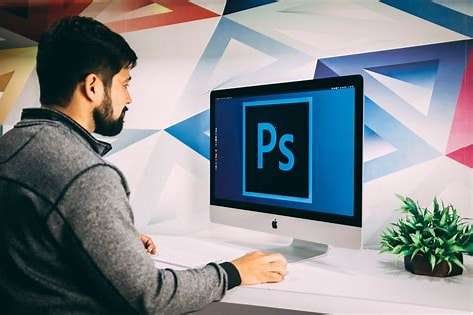
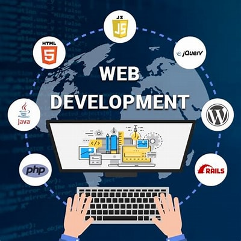

All your digital needs...covered.

Graphic design
As a graphic designer, I bring passion to my work, weaving stories through design.
With over 5 years of experience, I’ve collaborated with clients across diverse industries,
including hospitality, education, and entertainment.
I’ve crafted high-quality business cards, logos, and engaging social media posts.

Web Development
As a web developer, I am passionate about crafting digital
experiences that blend creativity and functionality.
My journey began with formal education in Computer engineering and IT in UDSM,
Beyond code, I explore indie games, experiment with new recipes, and cherish quality time with family.
In this ever-evolving digital landscape, I’m excited to contribute my skills and creativity to meaningful projects.
Let’s build something remarkable together! 🌐💻
Content Writing
As a content writer and creator, I am a versatile wordsmith who weaves narratives across
digital landscapes. My canvas spans blog posts, social media captions, and brand messaging.
With a blend of creativity and strategy, I craft engaging content that resonates with audiences.